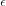

Introduction to Neural Nets¶
Slugnet is a modest experimental neural networks library intended to solidify the author’s understanding of deep learning.
The goal of this library is to mathematically document all relevant components of a working neural networks library. This includes models, layers, optimizers, activation functions, loss functions, forward propagation, backward propagation, and more.
The mathematical documentation assumes basic understanding of discriminative machine learning techniques, linear algebra, probability, and calculus. This documentation will loosely follow the notation found in Deep Learning (Goodfellow, Bengio, & Courville, 2016).
Before looking at any code, the following sections will introduce the notation
styles this library will follow as well as give a brief mathematical
introduction to neural networks. In general, a neural network tries to
approximate some function , where . The
neural network implements a function , where
represents the prediction made by the network, and
 represents the model. We say a neural network is fully connected if
each node in every layer is connected to every node in the adjacent layer. For
now, we will only consider fully connected neural networks.
represents the model. We say a neural network is fully connected if
each node in every layer is connected to every node in the adjacent layer. For
now, we will only consider fully connected neural networks.
Table of Contents¶
Feedforward Mode¶
When making predictions, a neural network is said to be operating in feedforward mode. For now, we will inspect how neural networks operate in this mode.
![\tikzset{%
brace/.style = { decorate, decoration={brace, amplitude=5pt} }
}
\draw [brace] (0.5,7) -- (1.5,7) node[yshift=0.5cm, xshift=-0.5cm] {Input};
\draw [brace] (3.5,9) -- (7.5,9) node[yshift=0.5cm, xshift=-1.9cm] {Hidden Layers};
\draw [brace] (9.5,6) -- (10.5,6) node[yshift=0.5cm, xshift=-0.5cm] {Output};
\foreach \x/\n in {2/3, 4/2, 6/1}
\draw(1,\x) circle(0.5cm)
node {$x_{\n}$};
\foreach \x/\n in {0/5, 2/4, 4/3, 6/2, 8/1}
\draw[fill=gray!30](4, \x) circle(0.5cm)
node {$h_{\n}^{(1)}$};
\foreach \x/\n in {1/4, 3/3, 5/2, 7/1}
\draw[fill=gray!30](7, \x) circle(0.5cm)
node {$h_{\n}^{(2)}$};
\foreach \x/\n in {3/2, 5/1}
\draw (10, \x) circle(0.5cm) node {$\hat{y}_{\n}$};
\foreach \x in {2,4,6}
\foreach \y in {0, 2, 4, 6, 8}
\draw[-{>[scale=4]}, shorten >= 0.55cm, shorten <= 0.5cm](1,\x) -- (4,\y);
\foreach \x in {0,2,4,6,8}
\foreach \y in {1,3,5,7}
\draw[->, shorten >= 0.55cm, shorten <= 0.5cm](4,\x) -- (7,\y);
\foreach \x in {1,3,5,7}
\foreach \y in {3,5}
\draw[->, shorten >= 0.55cm, shorten <= 0.5cm](7,\x) -- (10,\y);
:libs: arrows,calc,positioning,shadows.blur,decorations.pathreplacing,arrows.meta](_images/tikz-adc8470529f14c217692ecb8a1fe29ff68ee34e9.png)
Figure 1: A three layer, fully connected neural network. The first layer
has five hidden units. The superscript number in parenthesis indicates the
layer of the unit. The index in subscript represents the unit’s index. For
example  represents the third unit of the forth layer.
represents the third unit of the forth layer.
We can write the network in figure 1 as
. Each layer
is composed of the layer that came before it,
, the first layer takes the input
 . Variables that are lowercase and bold represent vectors, and
variables that are capitalized and bold represent matrices. Additionally, we may
represent the network with the shorthand diagram below.
. Variables that are lowercase and bold represent vectors, and
variables that are capitalized and bold represent matrices. Additionally, we may
represent the network with the shorthand diagram below.
![\tikzset{%
brace/.style = { decorate, decoration={brace, amplitude=5pt} }
}
\draw [brace] (0.5,2) -- (1.5,2) node[yshift=0.5cm, xshift=-0.5cm] {Input};
\draw [brace] (3.5,2) -- (7.5,2) node[yshift=0.5cm, xshift=-1.9cm] {Hidden Layers};
\draw [brace] (9.5,2) -- (10.5,2) node[yshift=0.5cm, xshift=-0.5cm] {Output};
\draw(1,1) circle(0.5cm) node {$\boldmath{x}$};
\draw(4,1)[fill=gray!30]circle(0.5cm) node {$\boldmath{h}^{(1)}$};
\draw(7,1)[fill=gray!30] circle(0.5cm) node {$\boldmath{h}^{(2)}$};
\draw(10,1) circle(0.5cm) node {$\hat{y}$};
\draw[->, shorten >= 0.55cm, shorten <= 0.5cm](1,1) -- (4,1);
\draw[->, shorten >= 0.55cm, shorten <= 0.5cm](4,1) -- (7,1);
\draw[->, shorten >= 0.55cm, shorten <= 0.5cm](7,1) -- (10,1);
:libs: arrows,calc,positioning,shadows.blur,decorations.pathreplacing,arrows.meta,bm](_images/tikz-d9bccb73d8ea3ba26b4c2bec9f5308f8f54a1ad8.png)
Figure 2: The same three layer network as in Figure 1, represented in a shorthand form where to units of each layer are collapsed onto one circle.
Let’s “zoom in” on one of the layers to see what is happening under the hood when our neural network is running in feedforward mode. The layer performs the computation defined in equation 1.
Equation 1: Definition of computation performed in one layer of a
neural network. In this equation, is the activated
output, represents the activation function,
represents a learned matrix of weights at this
layer, represents a learned vector of bias terms at
this layer, and represents the input at this layer.
Neural networks rely on a nonlinear activation function to learn nonlinear relationships. Without a nonlinear activation function, a neural network is nothing more than a linear model. There are several choices one can make for activation functions, including but not limited to tanh, sigmoid, and the rectified linear unit, or ReLU for short.
Upon completion of the feedforward operation, the prediction is output from the final layer.
Slugnet represents a neural network as a Model. You can run a
neural network in feedforward mode by calling model.transform(X)
on a model, where X is a matrix of inputs. In this case X
is a matrix to allow users of Slugnet to make several predictions
in one call to model.transform. Before you can run a model
in feedforward mode, it must be trained. This leads us to backpropogation and
optimization.
Loss, Backpropogation, and Optimization¶
Training a neural network is similar to training traditional discriminative models such as logistic regression. For instance, we need a loss function, we must compute derivatives, and we must implement some numerical algorithm to optimize the model. On the other hand, neural networks are somewhat unique in that they require us to compute a gradient at each layer with which we may learn weights. To compute this gradient, we use the backpropogation algorithm.
Before we can run backpropogation, a version of the feedforward algorithm described earlier must be run, only instead of throwing away the intermediate outputs at each layer, we store them, knowing that we’ll need them later for backpropogation. Additionally, during training, we require the ground truth labels or values of each sample. That is, the dataset consists of , where is the number of samples, and is the ground truth label or output value for sample .
Loss Functions¶
Upon completion of the forward pass on a batch of inputs, we can compute the loss for the batch using the predicted outputs, , and the ground truth labels or values . Loss functions are occasionally referred to as objective functions.
Equation 2: Binary cross entropy loss function.
If the outputs that we are learning are binary labels, then we might use a binary cross entropy loss function, seen in equation 2. On the other hand, if we are learning labels with multiple classes, we might use categorical cross entropy. The resulting loss value will inform us about how our network performed on the batch it just predicted. We can use this value along with validation to determine if our model is overfitting or underfitting the data.
Backpropogation¶
Backpropogation involves computing gradients for the weights
and bias for all layers  where is the number of layers in our network. Once we’ve computed
these gradients, the model can use a numerical optimization method to adjust
weights and bias terms in such a way that error is reduced. Before defining the
gradients of our weights and bias terms, we must define how to compute loss
gradient, and the gradient at each layer.
where is the number of layers in our network. Once we’ve computed
these gradients, the model can use a numerical optimization method to adjust
weights and bias terms in such a way that error is reduced. Before defining the
gradients of our weights and bias terms, we must define how to compute loss
gradient, and the gradient at each layer.
Equation 3: Defines how we compute the gradient of the loss function, which is the first gradient computed during backpropogation. From this gradient, we will compute all other gradients.
Once the gradient of the loss function is calculated, we may begin performing
backpropogation on the layers of our neural network. We start from the “top”
of the network, or the output layer. Using the loss gradient
 we can compute the gradient of the output layer as
defined in equation 3. The definition given in equation 4 is generalized, that
is, it applies to any hidden layer in the network.
we can compute the gradient of the output layer as
defined in equation 3. The definition given in equation 4 is generalized, that
is, it applies to any hidden layer in the network.
Equation 4: The definition of our activation gradient at layer  .
The variable reprsenets the activated output at layer
and represents the derivative of the activation
function. The unfilled dot (
.
The variable reprsenets the activated output at layer
and represents the derivative of the activation
function. The unfilled dot ( ) represents an item-wise
multiplication between two vectors. It can also be used to represent item-wise
multiplication between two matrices.
) represents an item-wise
multiplication between two vectors. It can also be used to represent item-wise
multiplication between two matrices.
Now, we have all we need to define the gradients of our weights and bias term.
Equation 5: This equation defines the gradients of weight and bias terms, and . In this equation, is the ouput from layer .
The only part of the computation that is missing is that of for the next layer in the backpropogation algorithm. This is definted in equation 3, and we can now see a recursive method of computing gradients from layer to layer.
Equation 6: How to propogate the gradient from layer to layer
 .
.
This is all we need to implement a full backpropogation algorithm. Repeated application of equations 3, 4, and 5 will give us the weight and bias gradients and at every layer, as indicated backpropogation’s pseudocode given in algorithm 1.
![\begin{algorithm}
\caption{Backward Propogation \newline
--Modification of source: Goodfellow, Bengio, \& Courville (Deep Learning, 2016)}
\label{backprop}
\begin{algorithmic}[1]
\Procedure{Backpropogation}{$\bm{\ell}, \bm{\hat{y}}, \bm{y}, \bm{h}, \bm{W}$}
\State $\bm{g} \gets \nabla_{\bm{\hat{y}}}\bm{\ell}(\bm{\hat{y}}, \bm{y})$
\For{$i=l, l-1, \dots 1$}
\State $\bm{g} \gets \bm{g} \circ \phi'(\bm{a}^{(i)})$
\State $\nabla_{\bm{W}^{(i)}}\bm{\ell} = \bm{g}_a^{(i)} \, \bm{h}^{(i-1)}$
\State $\nabla_{\bm{b}^{(i)}}\bm{\ell} = \bm{g}_a^{(i)}$
\State $\bm{g} \gets \bm{W}^{(i)^T} \bm{g}$
\EndFor
\Return $\langle \nabla_{\bm{W}}\bm{\ell}, \nabla_{\bm{b}}\bm{\ell} \rangle$
\EndProcedure
\end{algorithmic}
\end{algorithm}](_images/math/4baf9f56d8c220fb074a7d79e734ca7b11e03705.svg)
Optimization¶
Next, we can use the gradients computed in backpropogation (algorithm 1) to compute weight updates for each layer using a numerical optimization method.
For this introduction, we’ll focus on the stochastic gradient descent (SGD) optimization method. Stochastic gradient descent works by sampling data from the training set , computing the gradients with backpropogation, and applying our update using a learning rate parameter . In practice, we must gradually decrease over time.
![\setcounter{algorithm}{1}
\begin{algorithm}
\caption{Stochastic Gradient Descent pseudocode \newline
--Modification of source: Goodfellow, Bengio, \& Courville (Deep Learning, 2016)}
\label{backprop}
\begin{algorithmic}[1]
\Procedure{SGD}{$\bm{\ell}, \bm{x}, \bm{y}$}
\State $\bm{W} \gets \text{InitWeights}()$
\State $\bm{b} \gets \text{InitBias}()$
\While{not converged}
\State $\epsilon \gets \text{NextEpsilon}(\epsilon)$
\State Sample a minibatch of size $m$ from
$\{\bm{x}_i, \bm{y}_i\}_{i=1}^N$ as $\bm{x}_s, \bm{y}_s$
\State $\langle \bm{\hat{y}}_s, \bm{h} \rangle \gets
\text{FeedForward}(\bm{x}_s, \bm{y}_s, \bm{W}, \bm{b})$
\State $\langle \nabla_{\bm{W}}\bm{\ell}, \nabla_{\bm{b}}\bm{\ell} \rangle \gets
\frac{1}{m} \sum_{x, y \in \bm{x}_s, \bm{y}_s}
\text{Backpropogation}(\bm{\ell}, \bm{\hat{y}}_s, \bm{y}_s, \bm{h}, \bm{W})$
\For{$k = 1, 2, \dots, l$}
\State $\bm{W}^{(k)} \gets \bm{W}^{(k)} -
\epsilon \nabla_{\bm{W}^{(k)}}\bm{\ell}$
\State $\bm{b}^{(k)} \gets \bm{b}^{(k)} -
\epsilon \nabla_{\bm{b}^{(k)}}\bm{\ell}$
\EndFor
\EndWhile
\Return $\langle \bm{W}, \bm{b} \rangle$
\EndProcedure
\end{algorithmic}
\end{algorithm}](_images/math/4b4319fce2ba41a862a80f563e803b5fc8a17e00.svg)
In practice, we will decouple optimization methods from the backpropogation and feedforward algorithms in order to make a modular system of components that can be easily mixed and matched. This process is fairly straightforward and will be apparent as components are documented.